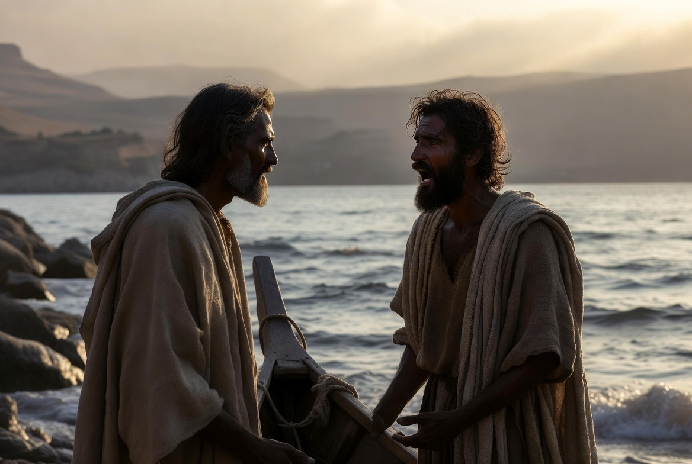
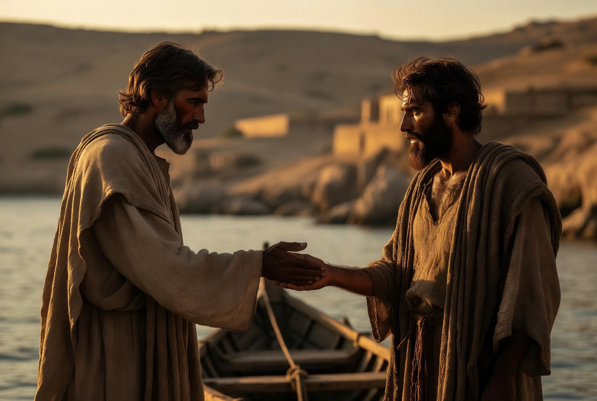

As he was stepping into the boat, the man who had been demonized kept begging him that he might be with him. (Mark 5:18)
Every other person Jesus heals in the first half of Mark is told to keep quiet. This man is told to talk.
Every other person Jesus heals in the first half of Mark is told to keep quiet. This man is told to talk. He is also the only healed person in the Gospel who asks to join the traveling company and is refused. Those two facts belong together, and they are not arbitrary: Mark has built the closing scene of the Gerasene exorcism as a deliberate photographic negative of the call of the Twelve in 3:14. The man asks for exactly the thing the Twelve were given, is denied it, and is then handed the other half of their commission. Reading the coda that way is not a homiletical flourish. It rests on a verbatim verbal link that the Greek makes unmistakable and most English translations quietly dissolve.
To feel the force of v. 18 you have to hear where the reader has already met its wording. In 3:14 Jesus “made twelve, whom he also named apostles, hina ōsin met’ autou, that they might be with him and that he might send them out to herald.” The appointment has two clauses: presence, then mission. Be with him, then sent to proclaim. Discipleship in Mark is defined by that pairing.
Jesus made twelve… that they might be with him and that he might send them out to herald. (Mark 3:14)
Now the restored man, at v. 18, asks for the first clause in its exact words: hina met’ autou ē, that he might be with him. And Jesus refuses. The refusal is blunt, ouk aphēken auton, “he did not permit him,” with no softening. But look at what the man receives in its place. He is sent (hypage, “go”), and he ends up doing precisely the second clause of 3:14: he heralds (kēryssein). He is granted the mission and denied the companionship.

The man who had been demonized kept begging him that he might be with him.
Jesus tells the man to “report to them how much the Lord has done for you, and how he had mercy on you.” On Jesus’ lips, and to this man’s ears, ho kyrios is the natural word for God. The command is a command to give God the glory: go tell your people what God has done.

Go to your home, to your own people, and report to them how much the Lord has done for you, and how he had mercy on you.
Then comes v. 20. “He went off and began to herald throughout the Decapolis how much Jesus had done for him.” The man obeys, and in obeying he substitutes. Told to publish what the Lord did, he publishes what Jesus did. Mark does not flag the change, does not have anyone correct it, does not narrate a theological inference. He simply lets the subject of the sentence shift from ho kyrios to ho Iēsous between the instruction and its execution, and leaves the reader holding both. The Lord’s deed and Jesus’ deed are the same deed.
He went off and began to herald throughout the Decapolis how much Jesus had done for him. And everyone was marveling.
Two details of scope close the passage, and both point the same direction. First, the errand grows in the telling. Jesus says report (apangeilon) to your household and your own people. The man heralds (kēryssein) throughout the Decapolis, the federation of ten Hellenized cities east of the Jordan. A domestic word of testimony becomes a public proclamation across a Gentile region.
He was not permitted to be with Jesus. He was permitted to be sent. In Mark’s account that is not the lesser gift; it is the shape the mission takes once the Lord has crossed to the other side.
Mark ends the scene there, with a Gentile proclaiming across ten Gentile cities and everyone marveling, and the Gospel will not return an apostle to this territory for chapters. The composer has planted, before the mission of the Twelve is even launched (6:7), a lone sent man carrying the second clause of their commission into the world beyond Israel. He was not permitted to be with Jesus. He was permitted to be sent. In Mark’s account that is not the lesser gift; it is the shape the mission takes once the Lord has crossed to the other side.